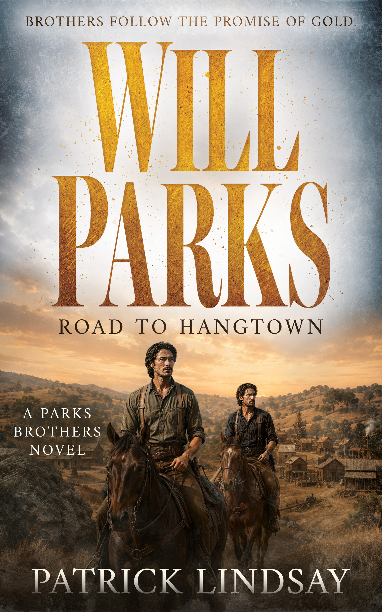
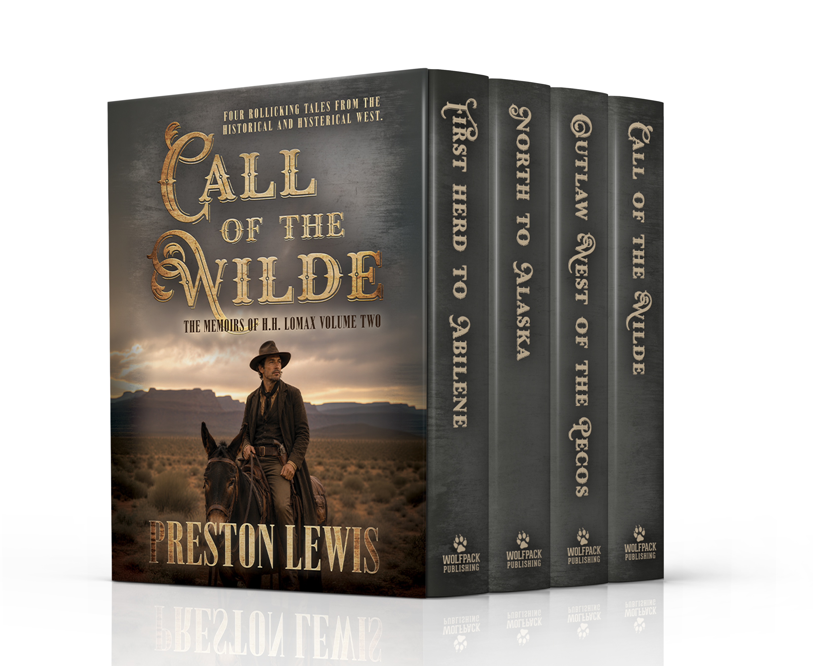
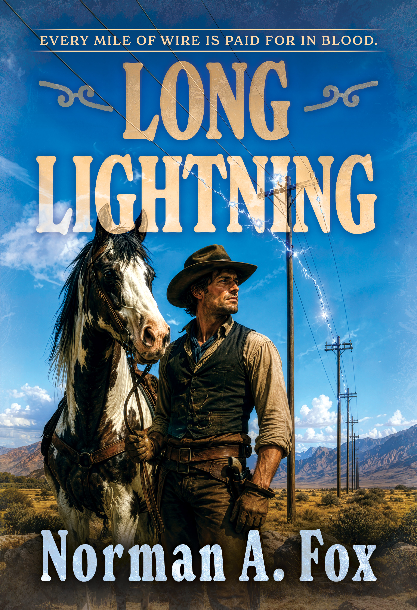

| View in browser |
 |
New from Wolfpack Publishing: Gold Rush survival, rollicking encounters with frontier legends, and a telegraph contractor's deadly race against outlaws and sabotage.Rugged stories for readers who like dust, danger, secrets, and no wasted motion. |
|

Will Parks: Road to Hangtown (Parks Brothers 1)by Patrick Lindsay
After a Cheyenne attack separates him from his twin on the Oregon Trail, Will Parks pushes toward California's goldfields. Claim jumpers, dock gangs, outlaws, and lawless San Francisco stand between him and the future he hopes to build.
Get Your Copy →
|
| |

Call of the Wilde: HH Lomax Volume Twoby Preston Lewis
Four rollicking H.H. Lomax adventures send the amiable wanderer from the first herd to Abilene to Alaska, the Pecos, and beyond. Along the way, Wild Bill Hickok, Calamity Jane, Soapy Smith, Judge Roy Bean, and Oscar Wilde turn history into hilarious frontier legend.
Get Your Copy →
|
| |

Long Lightningby Norman A. Fox
Holt Brandon has one season to drive a telegraph line through the Montana wilderness. An outlaw king, a rival company's sabotage, and a mysterious woman turn every mile of wire into a brutal race against time.
Get Your Copy →
|
|
Wolfpack Publishing 1707 E. Diana Street, Tampa, FL 33610 Website Unsubscribe |
|